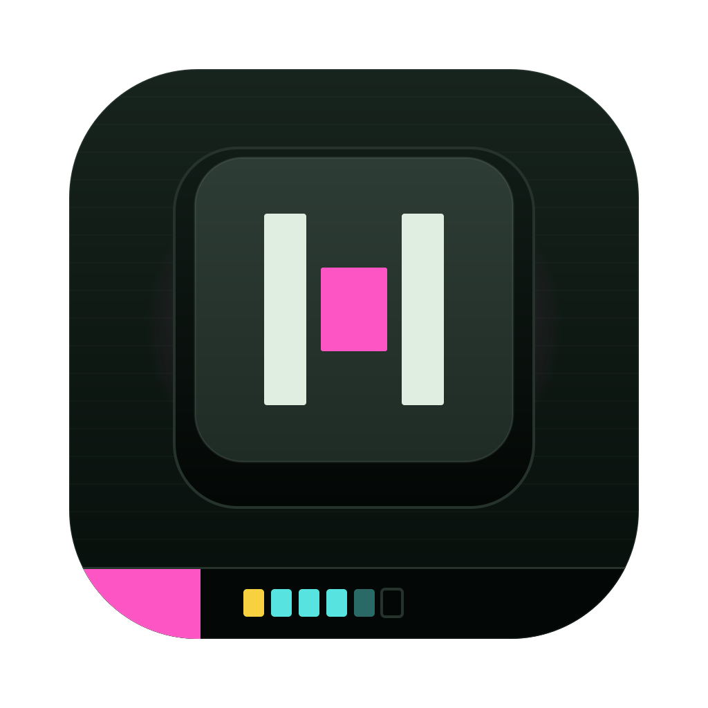

1 import { stripe } from "../lib/stripe"; 2 import { openThreeDSModal } from "./3ds-modal"; 3 4 export async function handlePaymentResult(result) { 5 if (result.status === "succeeded") { 6 return { ok: true }; 7 } 8 if (result.status === "requires_action") { 9 return openThreeDSModal(result.clientSecret); 10 } 11 return { ok: false, reason: result.status }; 12 } 13 14 export async function confirmCheckout(cart, card) { 15 const intent = await stripe.paymentIntents.create({ 16 amount: cart.total, 17 currency: "eur", 18 }); 19 const result = await stripe.confirmPayment(intent, card); 20 return handlePaymentResult(result); 21 }
git push
Run git push -u origin fix/3ds-eu-cards?
git push -u origin fix/3ds-eu-cards
